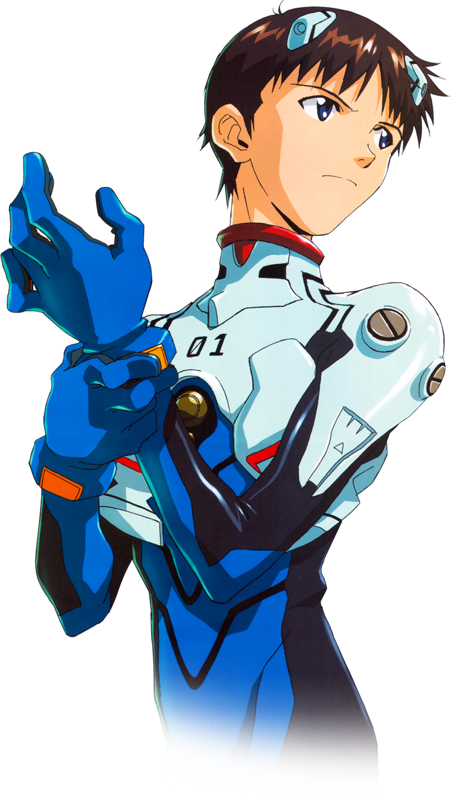
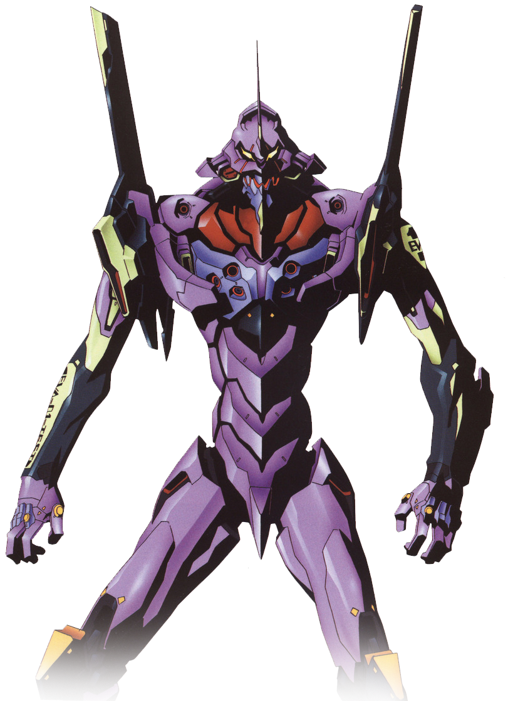
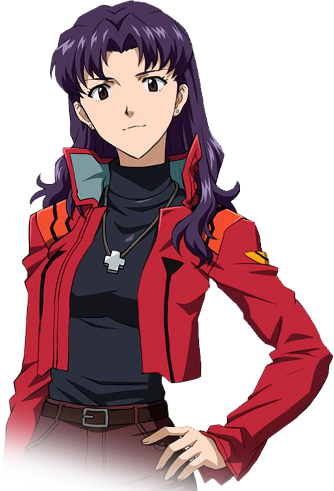

Aниме повествуют о борьбе человечества с таинственными созданиями — «Ангелами», нападающих по неизвестным причинам. С целью защиты от вторжения Ангелов используются биороботы «Евангелионы», Управлять этими роботами могут только некоторые 14-летние подростки, одним из которых является Икари Синдзи.
Это Синдзи
Когда он было маленьким,
его оставил отец.
Из-за этого он боится быть
нелюбимым и брошенным.
Когда Синдзи было 14, он был вызван своим отцом
Гэндо, командующим Nerv,
для управления одним из Евангелионов.
Это его отец,
Гэндо Икари
Но что же такое Евангелион?
Это такие такие гигантсткие биороботы, как этот.
Ева01
Но отец держался с Синдзи так же холодно, как и прежде.
Поэтому опекуном мальчика стала Мисато.
Это Мисато
Так Синдзи стал пилотом Евы-01
и был вынужден защищать Землю от ангелов.
Но не он один являлся пилотом Евы.
| Аска, пилот Евы-02 |
Рэй, пилот Евы-00 |
Так кто же такие Ангелы,
что грозятся уничтожить землю?
Вот одни из них.